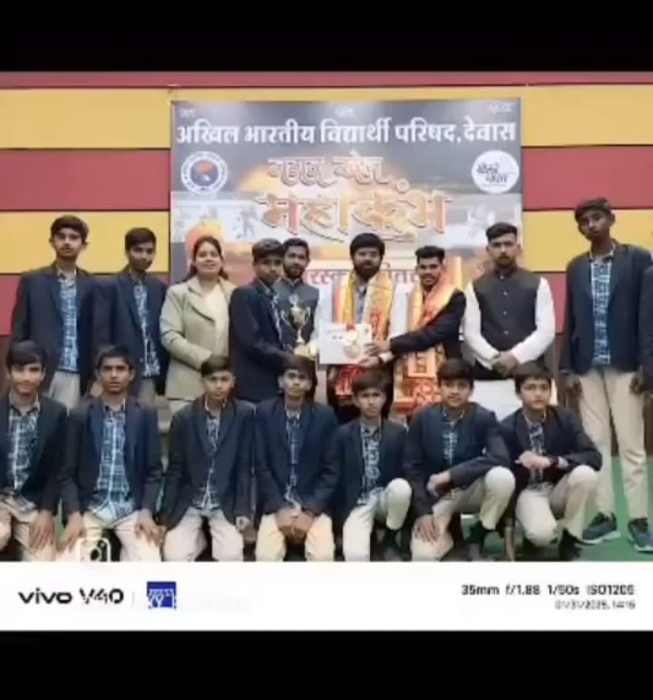
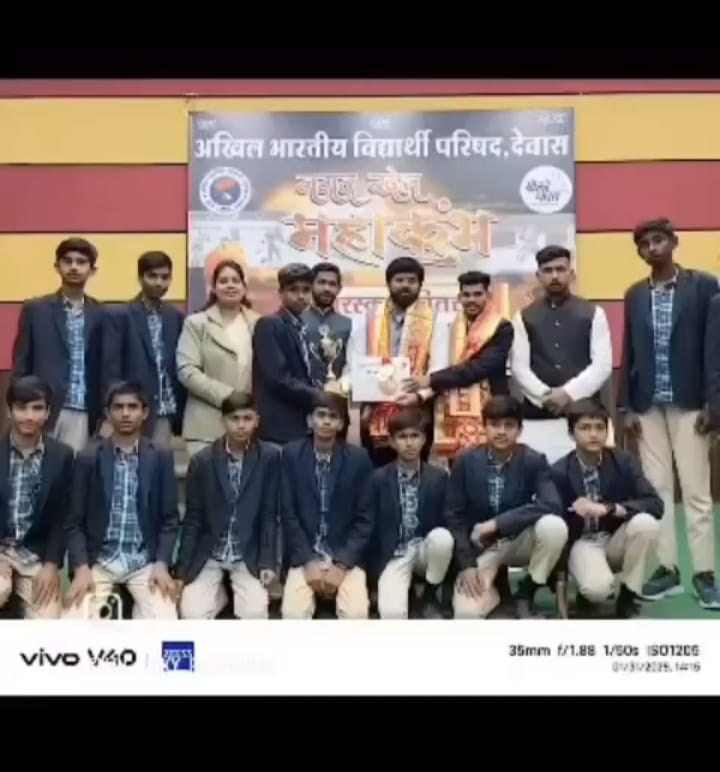
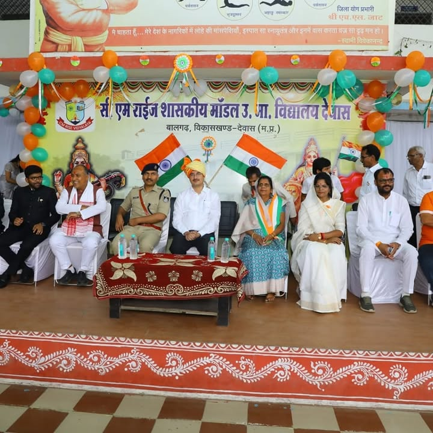
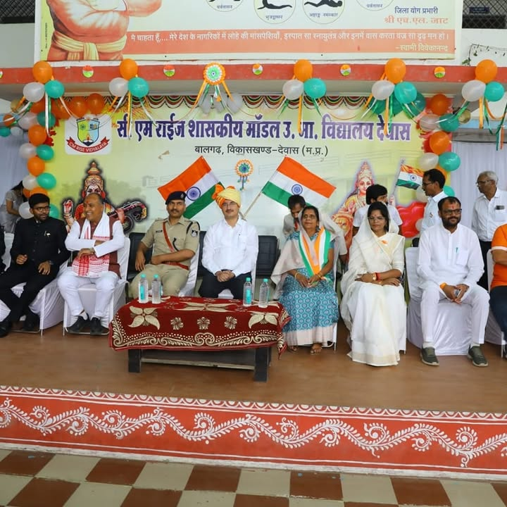

Welcome to Sandhipani School Dewas

Discover the beauty and history of Sandhipani, a hidden gem in the heart of nature.
About Sandhipani School
Sandhipani School is a renowned educational institution located in Dewas, Madh ya Pradesh, India. It is known for its commitment to providing quality education and fostering a nurturing environment for students. The school offers a comprehensive curriculum that focuses on academic excellence, character development, and extracurricular activities. With a dedicated team of teachers and staff, Sandhipani School aims to empower students to become responsible, compassionate, and successful individuals in their future endeavors.
- Established in 1995
- Affiliated with CBSE (Central Board of Secondary Education)
- Offers education from Kindergarten to Grade 12
- Emphasizes holistic development through various co-curricular activities
Vision
The aim of the school is to build a school community that nurtures compassion in all students, develops their ability to face challenges, and promotes their overall growth. It prepares them to contribute positively to society and to uphold constitutional values.
Mission
Our mission is to create a supportive, inclusive, and joyful school community. We encourage 21st-century skills and experiential learning to help our students become responsible, creative, and capable of facing challenges with self-confidence.We provide opportunities and support to students so they can move forward on the paths they choose, use their full potential, and live a meaningful and fulfilling life. ✨
Facilities at Sandhipani School
- State-of-the-art classrooms equipped with modern teaching aids.
- Well-stocked library with a wide range of books and resources.
- Science and computer laboratories for practical learning.
- Sports facilities including a playground and indoor games area.
- Art and music rooms to encourage creativity and talent.
- Safe and secure environment with trained staff and security measures in place.
Gallery
Explore the vibrant and joyful moments at Sandhipani School through our gallery of images.

 

Meet Our Teachers
Our dedicated and passionate teachers are the heart of Sandhipani School. They are committed to providing quality education and fostering a nurturing environment for our students. With their expertise and care, they inspire and guide our students to reach their full potential. Our teachers are not only educators but also mentors who play a crucial role in shaping the future of our students.
 
